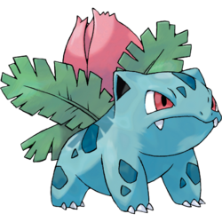
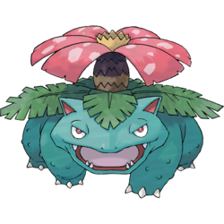
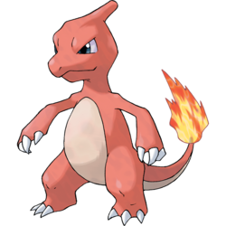
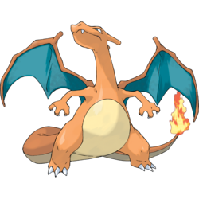
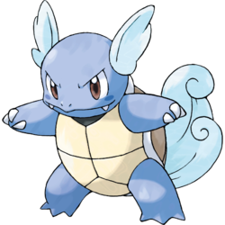
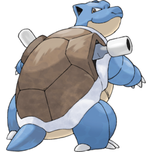

Pokedex
Bulbasaur #001

This is a dual-type Grass/Poison Pokémon introduced in Generation I. It evolves into Ivysaur starting at level 16, which evolves into Venusaur starting at level 32. Bulbasaur is a small, quadrupedal amphibian Pokémon that has blue-green skin with darker patches. It has red eyes with white pupils, pointed, ear-like structures on top of its head, and a short, blunt snout with a wide mouth. A pair of small, pointed teeth are visible in the upper jaw when its mouth is open. Each of its thick legs ends with three sharp claws. On Bulbasaur's back is a green plant bulb, which is grown from a seed planted there at birth. The bulb also conceals two slender, tentacle-like vines and provides it with energy through photosynthesis as well as from the nutrient-rich seeds contained within.
Ivysaur #002
This is a dual-type Grass/Poison Pokémon introduced in Generation I. It evolves from Bulbasaur starting at level 16 and evolves into Venusaur starting at level 32. Ivysaur is a quadrupedal amphibian Pokémon that has blue-green skin with darker patches. On top of its head are pointed ears with black insides and it has narrow red eyes. Ivysaur has a short, rounded snout with a wide mouth and two pointed teeth in its upper jaw. Each of its feet has three claws on them. The bulb on its back has bloomed into a large pink bud. A short brown trunk surrounded by leafy green fronds supports the bud.
Venusaur #003
This is a dual-type Grass/Poison Pokémon introduced in Generation I. It evolves from Ivysaur starting at level 32. It is the final form of Bulbasaur. Venusaur is a squat, quadrupedal amphibian Pokémon with bumpy, blue-green skin. It has small, circular red eyes; a short, blunt snout; and a wide mouth with two pointed teeth in the upper jaw and four in the lower jaw. On top of its head are small, pointed ears with reddish pink insides. It has three clawed toes on each foot. The bud on its back has bloomed into a large pink, white-spotted flower. The flower is supported by a thick, brown trunk surrounded by green fronds. A female Venusaur will have a seed in the center of its flower.
Charmander #004

This is a Fire-type Pokémon introduced in Generation I. It evolves into Charmeleon starting at level 16, which evolves into Charizard starting at level 36. Charmander is a bipedal, reptilian Pokémon with a primarily orange body and blue eyes. Its underside from the chest down and the soles of its feet are cream-colored. It has two small fangs visible in its upper jaw and two smaller fangs in its lower jaw. A fire burns at the tip of this Pokémon's slender tail and has blazed there since Charmander's birth. The flame can be used as an indication of Charmander's health and mood, burning brightly when the Pokémon is strong, weakly when it is exhausted, wavering when it is happy, and blazing when it is enraged. It is said that Charmander dies if its flame goes out. However, if the Pokémon is healthy, the flame will continue to burn even if it gets a bit wet and is said to steam in the rain.
Charmeleon #005
This is a Fire-type Pokémon introduced in Generation I. It evolves from Charmander starting at level 16 and evolves into Charizard starting at level 36. Charmeleon is a bipedal, reptilian Pokémon. It has dark red scales and a cream underside from the chest down. It has blue eyes and a long snout with a slightly hooked tip. On the back of its head is a single horn-like protrusion. It has relatively long arms with three sharp claws. Its short legs have plantigrade feet with three claws and cream-colored soles. The tip of its long, powerful tail has a flame burning on it. The temperature rises to unbearable levels if Charmeleon swings its tail.
Charizard #006
This is a dual-type Fire/Flying Pokémon introduced in Generation I. It evolves from Charmeleon starting at level 36. It is the final form of Charmander. Charizard is a draconic, bipedal Pokémon. It is primarily orange with a cream underside from the chest to the tip of its tail. It has a long neck, small blue eyes, slightly raised nostrils, and two horn-like structures protruding from the back of its rectangular head. There are two fangs visible in the upper jaw when its mouth is closed. Two large wings with blue-green undersides sprout from its back, and a horn-like appendage juts out from the top of the third joint of each wing. A single wing-finger is visible through the center of each wing membrane. Charizard's arms are short and skinny compared to its robust belly, and each limb has three white claws. It has stocky legs with cream-colored soles on each of its plantigrade feet. The tip of its long, tapering tail burns with a sizable flame.
Squirtle #007

This is a Water-type Pokémon introduced in Generation I. It evolves into Wartortle starting at level 16, which evolves into Blastoise starting at level 36. Squirtle is a small reptilian Pokémon that resembles a light-blue turtle. While it typically walks on its two short legs, it has been shown to run on all fours in Super Smash Bros. Brawl. It has large, purplish or reddish eyes and a slightly hooked upper lip. Each of its hands and feet have three pointed digits. The end of its long tail curls inward. Its body is encased by a tough shell that forms and hardens after birth. This shell is brown on the top, pale yellow on the bottom, and has a thick white ridge between the two halves.
Wartortle #008
This is a Water-type Pokémon introduced in Generation I. It evolves from Squirtle starting at level 16 and evolves into Blastoise starting at level 36. Wartortle is a bipedal, indigo reptilian Pokémon similar to a turtle. It has brown eyes, a dark blue streak on each cheek, and two sharp teeth protruding from its upper jaw. It has three clawed fingers and pointed toes. On each side of its head are feather-like ears covered in pale blue fur. A brown shell with a pale yellow underside encases its body. A thick, white rim separates the upper and lower halves of the shell. An older Wartortle may have scars and algae growing on its shell. Poking out of the bottom of the shell is a thick, wavy tail that also has light blue fur and cannot be fully withdrawn into its shell. Its tail fur will darken with age. Its tail is a popular symbol of longevity and good luck, making this Pokémon popular with the elderly.
Blastoise #009
This is a Water-type Pokémon introduced in Generation I. It evolves from Wartortle starting at level 36. It is the final form of Squirtle. Blastoise is a large, bipedal turtle Pokémon. Its body is blue and is mostly hidden by its tough, brown shell. This shell has a cream-colored underside and a white ridge encircling its arms and separating the upper and lower halves. Two powerful water cannons reside at the top of its shell over its shoulders. These cannons can be extended or withdrawn. Blastoise's head has triangular ears that are black on the inside, small brown eyes, and a cream-colored l